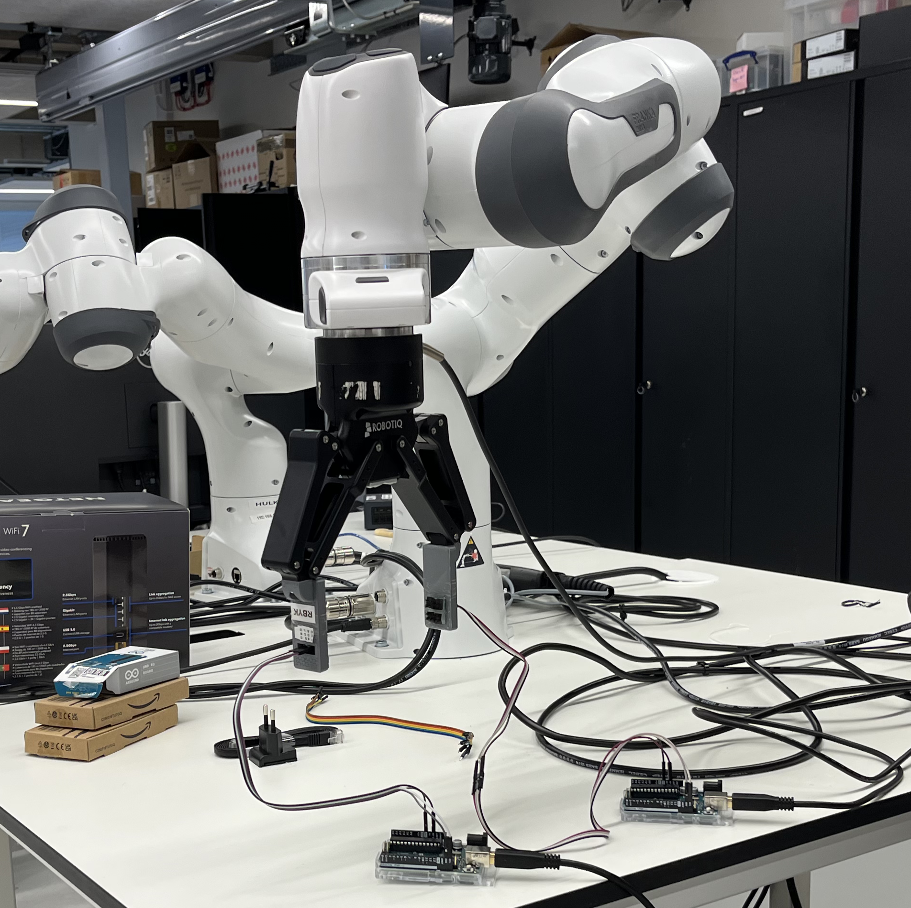
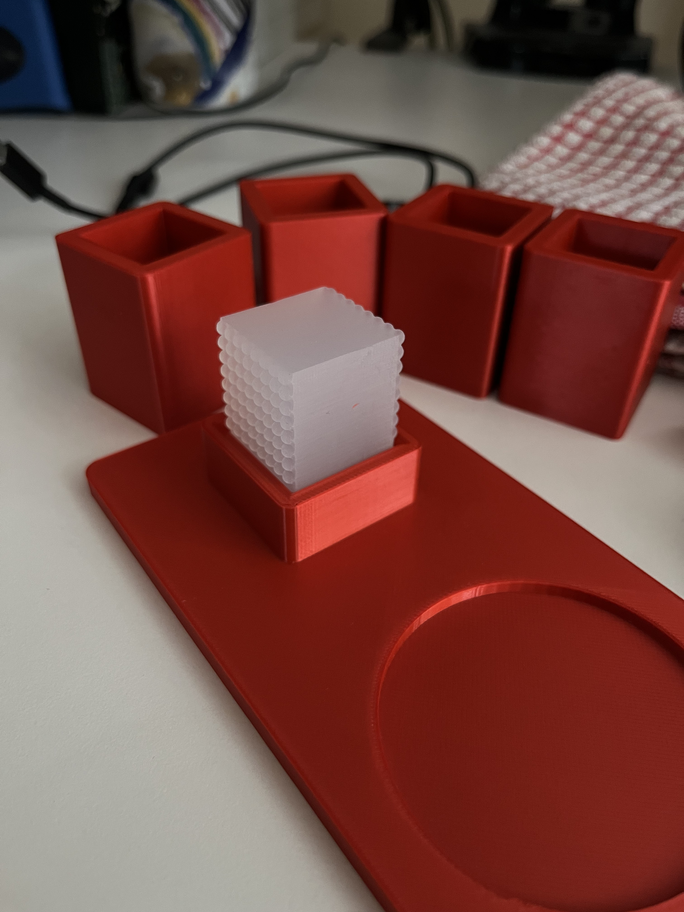
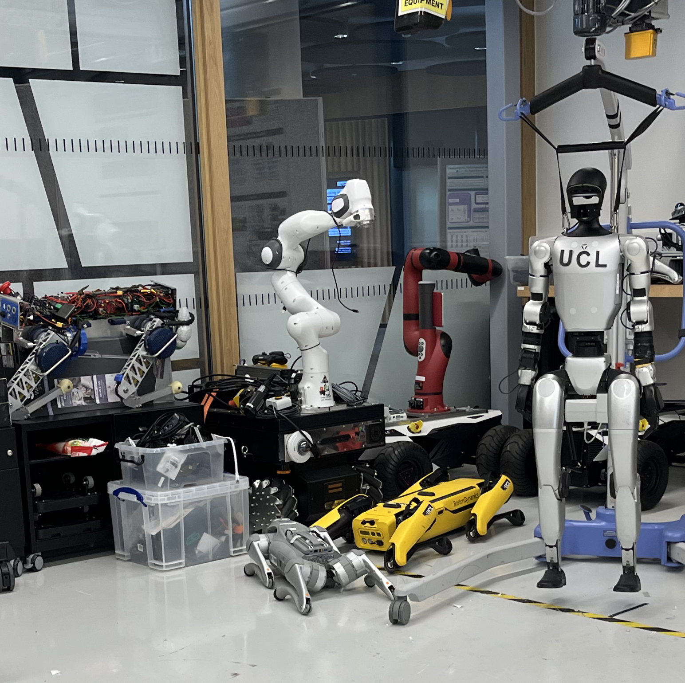

Tactile Intelligence for Robotics: Development Journal

Experiment Setup
This experiment will be making use of the franka-emika panda robot and a parallel gripper attachment used to hold the tactile sensor. For this project the sensor in question is a Bioinspired Ciliary sensor (P. Ribeiro et al, 2017). In this case, the sensor is set up to measure the deformation of the artificial cilia hairs, returning 3 signals for each sensor patch the x, y and z directions. Each sensor has 4 patches and 2 sensors are being used, one on each side of the parallel gripper.
Test Objects
Custom test objects were cast from ecoflex-00-50 silicone (Smooth-On, Inc.), for which the surfaces were modelled to vaguely resemble the textures of fruits. An initial 4 test objects were cast using a total of 160g of silicone and allowed to cure for 3 hours. The textures chosen were:
1 smooth object 1 “citrus” with small irregular indentations 1 “berry” with small bumps in a regular pattern 1 “berry” with different sized bumps in a regular pattern
The aim is to teach the model to recognize these different textures without any other information such as shape.


What’s Next
The next task for this project is to design the controller and data gathering method for the experiment. The data gathering will involve building an interface for the arduino board which receives the signals from the sensor. The control mechanism will need to be able to move the manipulator into the correct positions in order to gather the data, the exact motion for which will also need to be considered.
Bibliography
-
P. Ribeiro et al. Bioinspired Ciliary Force Sensor for Robotic Platforms. IEEE Robotics and Automation Letters, vol. 2, no. 2, pp. 971-976, April 2017, doi: 10.1109/LRA.2017.2656249.
-
Smooth-On, Inc. “Ecoflex™ 00-50 – Platinum Silicone Rubber.” Smooth-On, n.d.